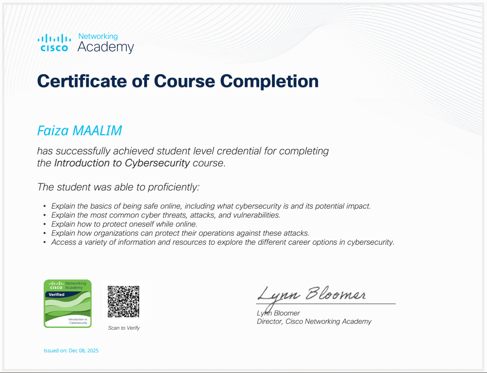
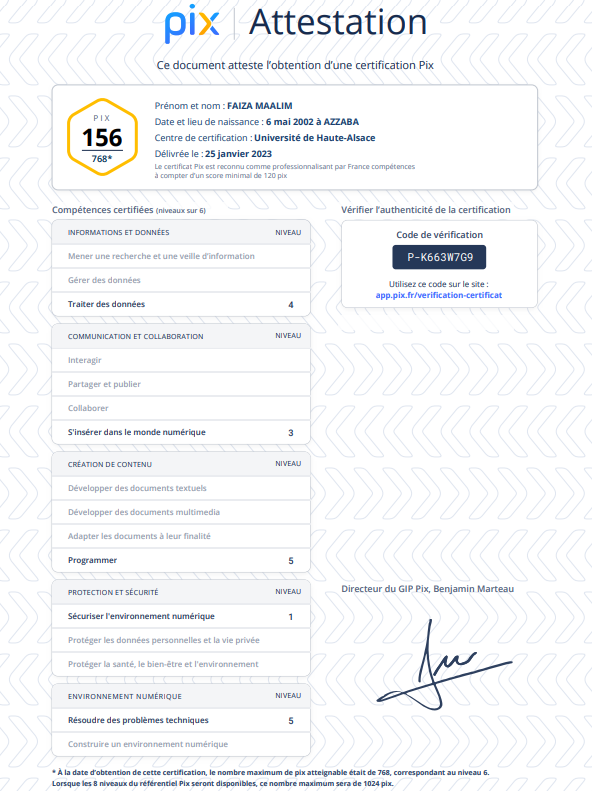
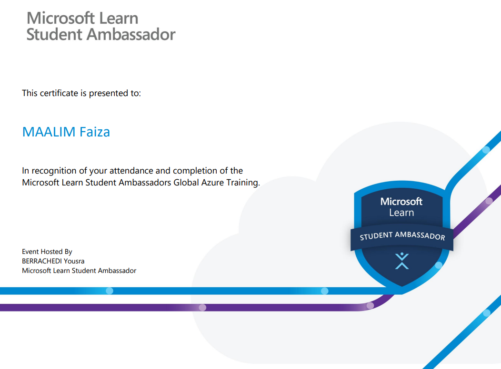
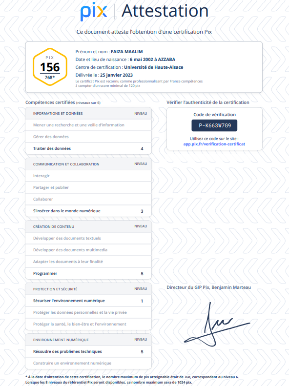
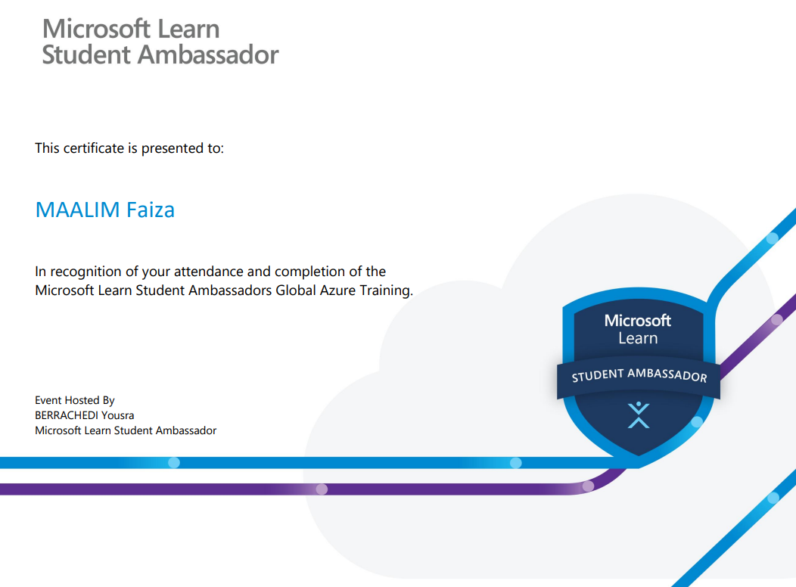

Certifications


 




Introduction à la Cybersécurité
Cisco Networking Academy – 2025
Introduction à l'IA pour les entreprises
Veolia Academy – 2025
Formation Prévention et Secours Civiques
Centre Français du Sourisme – 2023
PIX
Université Haute Alsace – 2023
Microsoft Azure Fundamentals
Microsoft – 2022
Fondamentaux du Marketing Numérique
Google – 2021